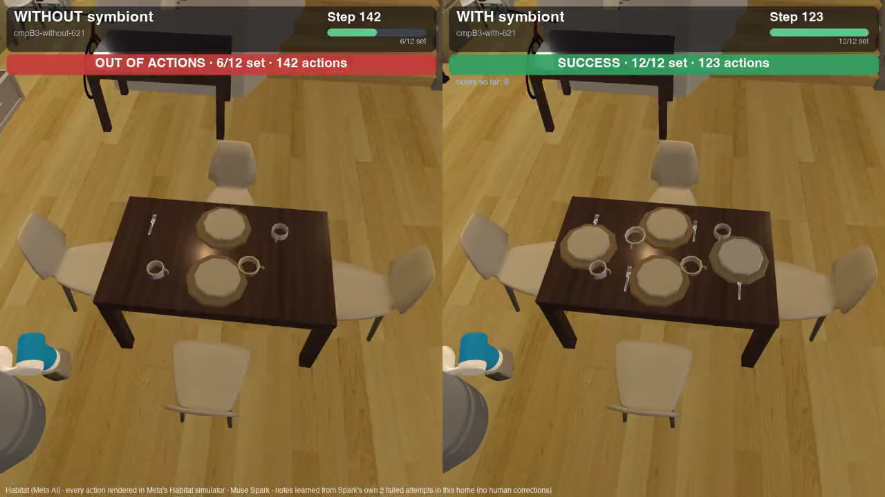
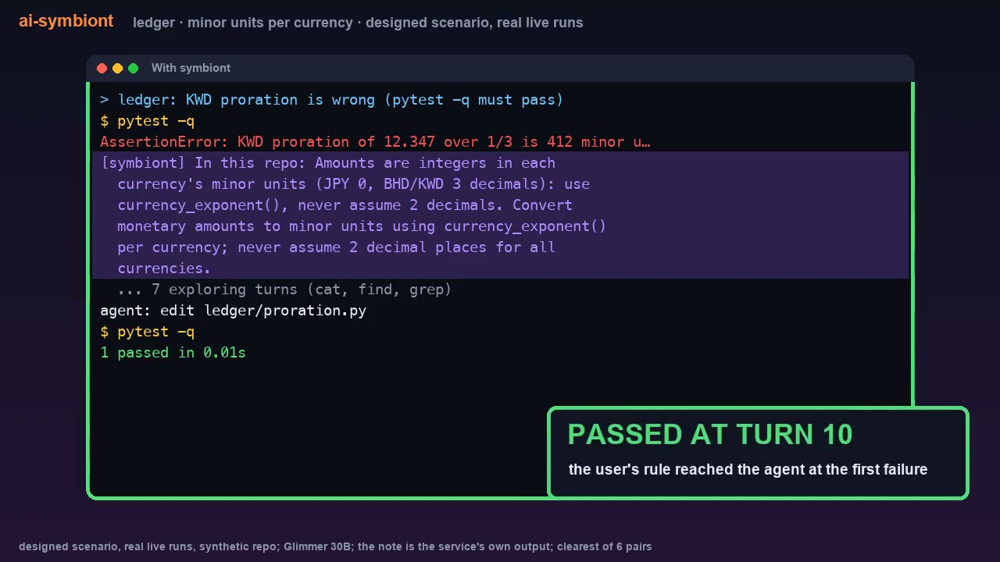

ai-symbiont is a plugin for Muse Code, Meta's coding agent, for developers who use it. It reads your past sessions on your own machine, finds the mistakes that came back, and shows the agent one short note in plain words at the moment it is about to repeat one. You can add what only you know. The same notes also steer a home robot and a game, shown below.

A robot in Meta's Habitat home simulator, every move chosen by Muse Spark, Meta's model. Right: the same model with notes symbiont learned from the robot's own two earlier failed attempts. No person corrected anything. [measured] [pre-registered] · Full recording, 8 min
A practice billing project with a hidden rule: money is stored as whole numbers in each currency's smallest unit (yen has no decimals; dinar has three). On an earlier task the coding agent assumed two decimals, and the test failed with assert 500000 == 5000.
The same test command failing in the same way as a failure it had saved from that earlier session. It matched the two by their exact text, with no AI model involved, and paired the failure with the edit that fixed it last time and the one line of context you had added yourself.
shown to the agent the moment the test failedIn this repo: Amounts are integers in each currency's minor units (JPY 0, BHD/KWD 3 decimals): use currency_exponent(), never assume 2 decimals. Convert monetary amounts to minor units using currency_exponent() per currency; never assume 2 decimal places for all currencies.
Without symbiont, the agent read files for 23 turns and fixed the bug on turn 24. Across 6 pairs of runs with the same model, the bug was fixed in 6 of 6 runs with symbiont and 2 of 6 without, within a 40-turn limit. [exploratory]
Where it stops working: six pairs of runs on a practice project we designed show the direction, not a rate, and were not pre-registered; on real public projects (example 05) we measured whether the notes were wrong, not how much faster the fix came. symbiont already learns from a repository's pull-request reviews and failed CI runs when you say yes; a guard that holds the agent's "done" while its last test run is still failing, and mining of CI output pasted into a session, are in development.
The task: clear the dining table and set it for four. The plates, cups and forks are hidden in closed cupboards and drawers, a pet knocks things over partway through, and the robot has a limited number of actions. Muse Spark, Meta's model, chose every action. Without help it failed twice, running out of actions with the table half set.
It read those two failed attempts and had the model write down what it had learned from them: where things turned out to be, which containers were empty, check the floor after a fall. No person corrected anything.
one of the notes, shown to the robot at step 31 [measured]Walk to a place before using it: open, pick and place only work where you stand. (seen 2x in an earlier episode.) Always navigate to a place before opening picking or placing, use only valid pick place open close syntax, and do not waste budget revisiting already checked places.
In 5 new episodes with different starting spots and pet events, the robot set the table in 4 of 5 with the notes and 0 of 5 without. [measured] [pre-registered]
Where it stops working: lessons about where things are only help when the home stays the same. When we hid the items somewhere new in every episode, the notes didn't help (1 of 5 either way) [measured]. Lessons about how to search, which carry over when everything moves, are in development.
Tidying a home with its own rules that no model could guess: mugs go above the stand mixer, the cat's bowl by the front door, towels in the middle-left drawer, the cast-iron pan in the drawer nearest the fridge. In the recorded episode, the robot on its own followed 0 of the 5 rules.
The owner corrected the robot once, stating the rules. symbiont kept those corrections and showed them as notes each time the robot planned in a new episode.
shown to the robot while planning
- Mugs go in the cupboard above the stand mixer (upper cupboard 3).
- The cat's bowl lives on the floor by the front door.
- Towels go in the middle left drawer of the chest of drawers by the front door.
- The cast-iron pan lives in counter drawer 1, the one nearest the fridge.
Across 6 new episodes with the notes, 0 house-rule violations; across 6 without, 30. Each episode started from a different position. [measured] [pre-registered]
Where it stops working: the corrections were scripted by us for the demo and state each rule outright, so this shows the robot keeps a rule it was told, not that it can work out a rule nobody stated. The test episodes use the same four rules with the items in new places.
Muse Spark, Meta's model, plays a level of Freedoom (a free, open-source first-person game) through ViZDoom, a research platform. Each turn it reads a text description of the screen and chooses its moves. On its own it wandered until it ran out of turns (32): in the recorded game, 8 wall bumps, 14 rooms re-entered, 18 wasted moves.
It showed the model its own failed games and asked it for rules. The model proposed 6. We tested each one on new games and threw out 5.
the one rule that survived testing, in the model's wordstravel to far-away places with one path command instead of many small steps.
With the rule, the model reached the exit in 9 turns; without it, it ran out of turns at 32 on the same level. Across 240 new games it had never seen, the rule raised the game score by 0.16 on a 0-to-1 scale, and the gain held when we repeated the test. [measured] [pre-registered]
Where it stops working: the model proposed 6 rules and 5 did no better on new games and were thrown out; this is the one survivor, so the testing, not the rule-writing, is what makes it safe. The gain is measured on this one game task only.

A wrong note sends the agent the wrong way. That costs more than no note at all. So symbiont stays quiet unless it is sure.
We used a public test set of real open-source projects with planted bugs. It has 89 projects symbiont had never seen. In them, the same mistake came back 251 times. Each time, symbiont could show a note or stay quiet. We counted how many of the notes it showed were wrong.
symbiont showed 501 notes. None of them was wrong. [measured] [pre-registered]
Where it stops working: the bugs in the test set were planted on purpose, not made by real developers. So your own project may behave differently. The overnight training ran on our machines. Running it on your own machine, on your own project's history, is in development.
Not just search. Two parts pick each note. A fast ranker finds the lessons that look most related. A small trained checker then reads the situation and the lesson and decides whether the lesson really applies. A note is shown only when both agree.
Why both? On its own, the ranker never stays quiet. In an earlier test it showed a wrong note 62% of the time [measured]. With the checker required to agree: 0 wrong out of 501 notes shown [measured] [pre-registered]. Plain similarity search, the way most retrieval tools pick, got 9 wrong and found about half as many useful moments [measured].
It keeps learning. Training the checker overnight on your project's own history let it catch 61% of repeated mistakes, against 0% before training, and 97.8% of what it approved was right [measured] [pre-registered].
| Result | What it means | Limit |
|---|---|---|
| 4 of 5 vs 0 of 5 | Home robot, table set in 5 new episodes: with symbiont's notes vs without. [measured] [pre-registered] | Works because a home stays the same; with items hidden somewhere new each time, 1 of 5 either way. |
| 30 → 0 | House-rule violations across 6 episodes without the owner's corrections vs 6 with them. [measured] [pre-registered] | Corrections scripted for the demo; same four rules, items in new places. |
| +0.16 | Game score, 0 to 1, across 240 new games with the model's own rule vs without, confidence interval [0.11, 0.22]. [measured] [pre-registered] | 5 of the 6 rules the model proposed failed testing; this is the one that survived. |
| 0 of 501 | Notes shown on repeated failures across 89 public repositories that were wrong. [measured] [pre-registered] | A public test set of real open-source projects with planted bugs, not bugs made by real developers. |
| 61% at 97.8% | After overnight training on a project's history, the checker approved 61% of repeated mistakes (0% untrained) and 97.8% of its approvals were correct: 5 of 924 wrong. [measured] [pre-registered] | Same test set with planted bugs; the training ran on our machines. |
| -0.054 | Training lessons directly into a 30B model's weights: not better yet at coding (0.054 below the plain model). [measured] | Exploratory, not a verdict. A retrain with a shorter context is in development. |
| 6 of 6 vs 2 of 6 | Coding example above: billing bug fixed within 40 turns, 6 paired runs with symbiont vs without, same model. [exploratory] | Six pairs show the direction, not a rate; a practice project we designed; not pre-registered. |
It reads your past Muse Code sessions on your machine and pairs each failure with the fix that worked. A lesson appears once the same trouble has happened twice.
You see where the turns went, open the costliest lessons, add what only you know, set a priority, or mark one as intentional so it goes quiet.
When the agent is about to repeat a known mistake, it gets one short note in plain words, written for the model reading it.
Knowledge only your team has, delivered at the moment it matters. Two concept animations, not measured results: air traffic control and a support desk, each with and without symbiont.
Three commands. Local first: your sessions are read and stored on your machine, nothing is uploaded, and any outbound call goes through a single audited path that refuses data without declared provenance. The README has the full steps and the uninstall.
uv tool install git+https://github.com/smalls257/ai-symbiont muse plugins marketplace add ai-symbiont https://github.com/smalls257/ai-symbiont muse plugins install symbiont@ai-symbiont